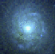

The use of large format detectors, increased access to very large astronomical databases, and other developments in observational astronomy have led to the situation where many astronomers are overwhelmed by the reduction and analysis process. Draco is a novel approach to data reduction and analysis which works in conjunction with existing analysis systems such as STSDAS/IRAF, IDL, etc. Draco takes on much of the mechanics of the process, allowing the astronomer to spend more time understanding the physical nature of the data.
 More About Draco (Publications)